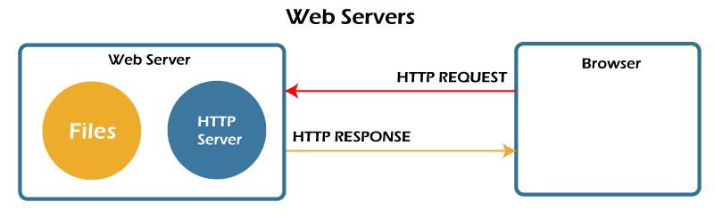

At the most basic level, whenever a browser needs a file that is hosted on a web server, the browser requests the file via HTTP. When the request reaches the correct (hardware) web server, the (software) HTTP server accepts the request, finds the requested document, and sends it back to the browser, also through HTTP. (If the server doesn't find the requested document, it returns a 404 response instead.)
To publish a website, you need either a static or a dynamic web server.
A static web server, or stack, consists of a computer (hardware) with an HTTP server (software). We call it "static" because the server sends its hosted files as-is to your browser.
A dynamic web server consists of a static web server plus extra software, most commonly an application server and a database. We call it "dynamic" because the application server updates the hosted files before sending content to your browser via the HTTP server.
For example, to produce the final webpages you see in the browser, the application server might fill an HTML template with content from a database. Sites like MDN or Wikipedia have thousands of webpages. Typically, these kinds of sites are composed of only a few HTML templates and a giant database, rather than thousands of static HTML documents. This setup makes it easier to maintain and deliver the content.
To review: to fetch a webpage, your browser sends a request to the web server, which searches for the requested file in its own storage space. Upon finding the file, the server reads it, processes it as-needed, and sends it to the browser. Let's look at those steps in more detail.
First, a web server has to store the website's files, namely all HTML documents and their related assets, including images, CSS stylesheets, JavaScript files, fonts, and video.
Technically, you could host all those files on your own computer, but it's far more convenient to store files all on a dedicated web server because:
Roughly speaking, a server can serve either static or dynamic content. Remember that the term static means "served as-is". Static websites are the easiest to set up, so we suggest you make your first site a static site.
The term dynamic means that the server processes the content or even generates it on the fly from a database. This approach provides more flexibility, but the technical stack is more complex, making it dramatically more challenging to build a website.
There are so many application server technologies that it's difficult to suggest a particular one. Some application servers cater to specific website categories like blogs, wikis, or eCommerce; others are more generic. If you're building a dynamic website, take the time to choose technology that fits your needs. Unless you want to learn web server programming (which is an exciting area in itself!), you don't need to create your own application server.